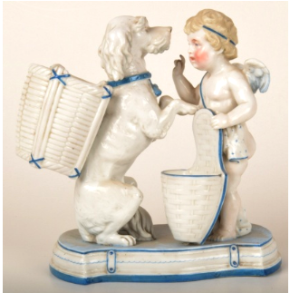

🔇 Is bhasha me is vastu ka audio abhi uplabdh nahi hai.
2. CS - II - 153: कुत्ते के साथ कामदेव

2. CS - II - 153
एक आधार पर सफ़ेद चमकदार चीनी मिट्टी के फूलदान में, कामदेव एक टोकरी के साथ खड़ा है। कुत्ता अपने आगे के पैरों को उठाए हुए है और उसकी पीठ पर एक टोकरी रखी हुई है। कामदेव कुत्ते की ओर अपनी अंगुली दिखा रहा है। नीचे का हिस्सा नीले रंग से भरा हुआ है। रोमन पौराणिक कथाओं में, कामदेव प्रेम, इच्छा, आकर्षण और स्नेह का देवता है। उसे अक्सर पंखों वाले नग्न छोटे बच्चे के रूप में दिखाया जाता है, जो धनुष और तीर लिए होते हैं। वह वीनस, प्रेम की देवी, और युद्ध के देवता का पुत्र है। पोर्सिलेन एक सिरेमिक सामग्री है, जिसे कच्चे पदार्थों को गर्म करके बनाया जाता है, जिसमें आमतौर पर काओलिनाइट शामिल होता है, और इसे 1200 से 1400 डिग्री सेल्सियस के बीच के भट्टियों में पकाया जाता है। यह कामदेव जर्मनी का है और इसका निर्माण 19वीं शताब्दी में हुआ था।
2. CS - II - 153: Cupid with Dog
2. CS - II - 153
On a white glazed porcelain vase set upon a base, Cupid stands with a basket. The dog is raised on its forelegs with a basket placed on its back, and Cupid points his finger towards the dog. The lower portion is filled with blue. In Roman mythology, Cupid is the god of love, desire, attraction and affection. He is often shown as a winged, naked little child carrying a bow and arrows. He is the son of Venus, the goddess of love, and the god of war. Porcelain is a ceramic material made by heating raw materials, usually including kaolinite, and fired in kilns at between 1200 and 1400 degrees Celsius. This Cupid is from Germany and was made in the 19th century.
2. CS - II - 153: కుక్కతో కూడిన కాముడు (CUPID WITH DOG)
2. CS - II - 153
కుక్కతో కూడిన కాముడు (CUPID WITH DOG) విగ్రహం 19వ శతాబ్దానికి చెందిన జర్మన్ కళాఖండం. ఇది ఒక తెలుపు రంగు మెరుగుపెట్టిన (glazed) పింగాణీ (porcelain) పూల కుండీ, దీనిని ఒక పీఠంపై అమర్చారు. ఇందులో కాముడు (ప్రేమ దేవుడు) ఒక బుట్ట ముందు నిలబడి ఉండగా, కుక్క తన ముందు కాళ్ళను పైకెత్తి, వీపుపై మరొక బుట్టతో కనిపిస్తుంది; కాముడు ఆ కుక్క వైపు వేలు చూపిస్తున్నాడు. ఈ విగ్రహం అడుగు భాగం నీలం రంగుతో నిండి ఉంది. రోమన్ పురాణాలలో, కాముడు (వీనస్ కుమారుడు) ప్రేమ, కోరిక మరియు ఆకర్షణ దేవుడిగా ప్రసిద్ధి చెందాడు. పింగాణీ అనేది సుమారు 1200 నుండి 1400 డిగ్రీల సెల్సియస్ ఉష్ణోగ్రత వద్ద ముడి పదార్థాలను వేడి చేయడం ద్వారా తయారుచేయబడిన ఒక సెరామిక్ పదార్థం.
(FIGURE OF A PRIMITIVE MAN)
(FIGURE OF A PRIMITIVE MAN)
இதுஅடித்தளத்துடன்கூடியவெள்ளைநிறத்தில்மெருகூட்டப்பட்டபீங்கான்மலர்குடுவை. இதில்க்யூபிட்என்றஉருவம்ஒருகூடைமுன்னால்நிற்கும்நிலையில்சித்தரிக்கப்பட்டுள்ளது. அதன்அருகில்ஒருநாய்முன்கால்களைஉயர்த்தியநிலையில்காணப்படுகிறது; அதன்முதுகில்ஒருகூடைவைக்கப்பட்டுள்ளது. க்யூபிட்அந்தநாயைநோக்கிதனதுவிரலைகாட்டும்வகையில்வடிவமைக்கப்பட்டுள்ளது. குடுவையின்அடிப்பகுதிநீலநிறத்தில்அலங்கரிக்கப்பட்டுள்ளது.ரோமானியபுராணங்களில்க்யூபிட்என்பதுகாதல், விருப்பம், ஈர்ப்புமற்றும்பாசத்தின்கடவுளாகக்கருதப்படுகிறார். அவர்பொதுவாகஇறக்கைகள்கொண்டநிர்வாணசிறுவனாகவும், கையில்வில்லும்அம்பும்ஏந்தியவராகவும்சித்தரிக்கப்படுகிறார். அவர்காதலின்தெய்வமானவீனஸ்மற்றும்போர்க்கடவுளின்மகனாகக்கருதப்படுகிறார்.போர்சிலேன்என்பதுபொதுவாககயோலினைட்போன்றமூலப்பொருட்களை 1200 முதல் 1400 டிகிரிசெல்சியஸ்வரைஅதிகவெப்பத்தில்அடுக்கில்சூடாக்குவதன் மூலம் தயாரிக்கப்படும்ஒருசெராமிக்பொருளாகும்.இந்தக்யூபிட்உருவம்ஜெர்மனியைச்சேர்ந்ததாகும்; இது 19ஆம்நூற்றாண்டைச்சேர்ந்ததாகக்கருதப்படுகிறது
Top of Form
Bottom of Form
Top of Form
Bottom of Form
2. CS - II - 153: कुत्र्यासोबत कामदेव
2. CS - II - 153
एका आधारावर ठेवलेल्या पांढऱ्या चकचकीत चिनीमातीच्या फुलदाणीत, कामदेव एका टोपलीसह उभा आहे. कुत्रा आपले पुढचे पाय उंचावून उभा असून त्याच्या पाठीवर एक टोपली ठेवली आहे. कामदेव कुत्र्याकडे आपले बोट दाखवत आहे. खालचा भाग निळ्या रंगाने भरलेला आहे. रोमन पुराणकथांमध्ये कामदेव हा प्रेम, इच्छा, आकर्षण आणि स्नेह यांचा देव आहे. त्याला अनेकदा पंख असलेल्या नग्न लहान बालकाच्या रूपात दाखवले जाते, ज्याच्या हातात धनुष्य आणि बाण असतात. तो व्हीनस या प्रेमाच्या देवीचा आणि युद्धदेवाचा पुत्र आहे. पोर्सलिन ही एक सिरॅमिक सामग्री आहे, जी कच्च्या पदार्थांना तापवून बनवली जाते; त्यात सामान्यतः काओलिनाइट असते आणि ती १२०० ते १४०० अंश सेल्सिअस तापमानाच्या भट्टीत भाजली जाते. हा कामदेव जर्मनीचा असून त्याची निर्मिती १९व्या शतकात झाली होती.
2. CS-II-153: നായയോടൊപ്പമുള്ള ക്യൂപിഡ്
2. CS-II-153
ഒരുപീഠത്തിന്മേൽ ഉറപ്പിച്ച വെളുത്ത മിനുസമുള്ള പോർസലൈൻ ഫ്ളവർ വേസ്. ഇതിൽ ഒരു കൊച്ചുമാലാഖയുടെ രൂപമുണ്ട്; ക്യൂപിഡിന് മുന്നിലായി ഒരു കൊട്ടയും കാണാം. മുന്നിലെ രണ്ടു കാലുകളും ഉയർത്തിപ്പിടിച്ചു നിൽക്കുന്ന ഒരു നായയും, അതിന്റെ പുറത്ത് ഒരു കൊട്ടയും ചിത്രീകരിച്ചിരിക്കുന്നു. ക്യൂപിഡ് തന്റെ വിരൽ ചൂണ്ടി നായയെ എന്തോ കാണിക്കുന്നു. ഈ ശില്പത്തിന്റെ അടിഭാഗം നീല നിറം കൊണ്ട് നിറച്ചിരിക്കുന്നു.
റോമൻ പുരാണപ്രകാരം, സ്നേഹം, ആഗ്രഹം, ആകർഷണം, അനുരാഗം എന്നിവയുടെ ദേവനാണ് ക്യൂപിഡ്. സാധാരണയായി ചിറകുകളുള്ള, വില്ലും അമ്പും ഏന്തിയ ഒരു നഗ്നബാലനായിട്ടാണ് ക്യൂപിഡിനെ ചിത്രീകരിക്കാറുള്ളത്. സ്നേഹത്തിന്റെ ദേവിയായ വീനസിന്റെയും, യുദ്ധദേവനായ മാർസിന്റെയും മകനാണ് ഇദ്ദേഹം. സാധാരണയായി കയോലിനൈറ്റ് ഉൾപ്പെടെയുള്ള അസംസ്കൃത വസ്തുക്കൾ ചൂളയിൽ1200°Cനും1400°Cനും ഇടയിലുള്ള താപനിലയിൽ ചൂടാക്കിയാണ് പോർസലൈൻ നിർമ്മിക്കുന്നത്. ക്യൂപിഡിന്റെ ഈ ശില്പം 19-ാം നൂറ്റാണ്ടിൽ ജർമ്മനിയിൽ നിർമ്മിക്കപ്പെട്ടതാണ്.
റോമൻ പുരാണപ്രകാരം, സ്നേഹം, ആഗ്രഹം, ആകർഷണം, അനുരാഗം എന്നിവയുടെ ദേവനാണ് ക്യൂപിഡ്. സാധാരണയായി ചിറകുകളുള്ള, വില്ലും അമ്പും ഏന്തിയ ഒരു നഗ്നബാലനായിട്ടാണ് ക്യൂപിഡിനെ ചിത്രീകരിക്കാറുള്ളത്. സ്നേഹത്തിന്റെ ദേവിയായ വീനസിന്റെയും, യുദ്ധദേവനായ മാർസിന്റെയും മകനാണ് ഇദ്ദേഹം. സാധാരണയായി കയോലിനൈറ്റ് ഉൾപ്പെടെയുള്ള അസംസ്കൃത വസ്തുക്കൾ ചൂളയിൽ1200°Cനും1400°Cനും ഇടയിലുള്ള താപനിലയിൽ ചൂടാക്കിയാണ് പോർസലൈൻ നിർമ്മിക്കുന്നത്. ക്യൂപിഡിന്റെ ഈ ശില്പം 19-ാം നൂറ്റാണ്ടിൽ ജർമ്മനിയിൽ നിർമ്മിക്കപ്പെട്ടതാണ്.
2. CS - II - 153: ಕ್ಯುಪಿಡ್ ವಿತ್ ಡಾಗ್
2. CS - II - 153
ಒಂದು ಪೀಠದ ಮೇಲಿರುವ ಈ ಬಿಳಿ ಹೊಳಪಿನ ಪಿಂಗಾಣಿ ಹೂದಾನಿಯ ವಿನ್ಯಾಸದಲ್ಲಿ, ಕ್ಯೂಪಿಡ್ ತನ್ನ ಎದುರಿರುವ ಬುಟ್ಟಿಯ ಬಳಿ ನಿಂತಿದ್ದಾನೆ. ಒಂದು ನಾಯಿಯು ತನ್ನ ಮುಂದಿನ ಕಾಲುಗಳನ್ನು ಮೇಲಕ್ಕೆತ್ತಿ ನಿಂತಿದ್ದು, ಅದರ ಬೆನ್ನಿನ ಮೇಲೆ ಒಂದು ಬುಟ್ಟಿ ಇದೆ. ಕ್ಯೂಪಿಡ್ ತನ್ನ ಬೆರಳನ್ನು ನಾಯಿಯ ಕಡೆಗೆ ಮಾಡಿ ತೋರಿಸುತ್ತಿದ್ದಾನೆ. ಈ ಕಲಾಕೃತಿಯ ತಳಭಾಗವು ನೀಲಿ ಬಣ್ಣದಿಂದ ಕೂಡಿದೆ.ರೋಮನ್ಪುರಾಣದಪ್ರಕಾರ, ಕ್ಯೂಪಿಡ್ಪ್ರೀತಿ, ಆಸೆ, ಆಕರ್ಷಣೆಮತ್ತುಒಲವಿನದೇವತೆಯಾಗಿದ್ದಾನೆ. ಈತನನ್ನುಹೆಚ್ಚಾಗಿಬಿಲ್ಲುಮತ್ತುಬಾಣವನ್ನುಹಿಡಿದಿರುವ, ರೆಕ್ಕೆಗಳನ್ನುಹೊಂದಿರುವಬೆತ್ತಲೆಗಂಡುಮಗುವಿನಂತೆಚಿತ್ರಿಸಲಾಗುತ್ತದೆ. ಈತನುಪ್ರೀತಿಯದೇವತೆಯಾದವೀನಸ್ಹಾಗೂಯುದ್ಧದೇವನಮಗನಾಗಿದ್ದಾನೆ.ಪಿಂಗಾಣಿಎಂಬುದುಒಂದುಸೆರಾಮಿಕ್ವಸ್ತುವಾಗಿದ್ದು, ಕಾಯೋಲಿನೈಟ್ನಂತಹಕಚ್ಚಾವಸ್ತುಗಳನ್ನು 1200 ರಿಂದ 1400 ಡಿಗ್ರಿಸೆಲ್ಸಿಯಸ್ತಾಪಮಾನದಗೂಡಿನಲ್ಲಿಕಾಯಿಸಿಇದನ್ನುತಯಾರಿಸಲಾಗುತ್ತದೆ. ಜರ್ಮನಿಗೆಸೇರಿದ ಈ ಕ್ಯೂಪಿಡ್ಕಲಾಕೃತಿಯು 19ನೇ ಶತಮಾನದಷ್ಟುಹಳೆಯದಾಗಿದೆ.
2. CS - II - 153: କାମଦେବ ସହିତ ଶୁକ
2. CS - II - 153
ଏଠାରେ ଧଳା ଗ୍ଲେଜଡ୍ ପୋର୍ସେଲିନ୍ ଫୁଲଦାନୀର ଆଧାର ଉପରେ, ଗୋଟିଏ ଶୁକ ସମ୍ମୁଖରେ ଟୋକେଇ ଧରି କାମଦେବ ଠିଆ ହୋଇଥିବାର ଦେଖାଯାଇଥାନ୍ତି। ଶୁକଟି ତା'ର ଆଗ ଗୋଡ଼ ଉପରକୁ ଉଠାଇ ଅଛି ଏବଂ ପିଠି ପଟେ ଗୋଟିଏ ଟୋକେଇ ଧରିଅଛି। କାମଦେବ, ଶୁକ ଥିବା ଦିଗକୁ ଅଙ୍ଗୁଠି ନିର୍ଦ୍ଦେଶ କରିଛନ୍ତି। ତଳ ଭାଗଟି ନୀଳ ରଙ୍ଗରେ ପରିପୂର୍ଣ୍ଣ ଅଟେ। ରୋମାନ ପୌରାଣିକ କାହାଣୀରେ, କାମଦେବ ହେଉଛନ୍ତି ପ୍ରେମ, ଇଚ୍ଛା, ଆକର୍ଷଣ ଏବଂ ସ୍ନେହର ଦେବତା। ତାଙ୍କୁ ପ୍ରାୟତଃ ଡେଣା ଥିବା ଉଲଗ୍ନ ଶିଶୁ ପୁଅ ଭାବରେ ଚିତ୍ରଣ କରାଯାଇଥାଏ, ଯାହାଙ୍କ ପାଖରେ ଧନୁ ଏବଂ ତୀର ଥାଏ। ସେ ହେଉଛନ୍ତି ପ୍ରେମର ଦେବୀ ଭେନସ୍ଏବଂ ଯୁଦ୍ଧର ଦେବତାଙ୍କ ପୁତ୍ର। ପୋର୍ସେଲେନ୍ ହେଉଛି ସିରାମିକ୍ ସାମଗ୍ରୀରେ ନିର୍ମିତ ଯାହା କଞ୍ଚାମାଲକୁ ଗରମ କରି ତିଆରି କରାଯାଇଥାଏ, ସାଧାରଣତଃ ଏଥିରେ କାଓଲିନାଇଟ୍ ଅନ୍ତର୍ଭୁକ୍ତ ହୋଇଥାଏ, ଏହାକୁ 1200 ରୁ 1400 ଡିଗ୍ରୀ ସେଲସିୟସ୍ ରେ ଚୁଲାର ତାପମାତ୍ରାରେ ଗରମ କରି ତିଆରି କରାଯାଇଥାଏ। ଏହି କାମଦେବଙ୍କ ମୂର୍ତ୍ତିଟି ଜର୍ମାନୀରେ 19ଶ ଶତାବ୍ଦୀର ନିର୍ମିତ ହୋଇଅଛି।
2. CS - II - 153: সারমেয় সহ কিউপিড
2. CS - II - 153
একটি আধারের ওপর স্থাপিত সাদা চকচকে চীনামাটির (পোরসেলিন) তৈরি ফুলদানি, যার সামনে একটি ঝুড়ি নিয়ে একজন ডানাওয়ালা শিশু দেবতা (কিউপিড) দাঁড়িয়ে আছেন। কুকুরটি তাঁর সামনের দুই পা তুলে আছে এবং তার পিঠে একটি ঝুড়ি রয়েছে। কিউপিড কুকুরটির দিকে আঙুল দিয়ে নির্দেশ করছেন। নিচের অংশটি নীল রঙে পূর্ণ। রোমান পৌরাণিক কাহিনীতে, কিউপিড হলেন প্রেম, বাসনা, আকর্ষণ এবং অনুরাগের দেবতা। তাঁকে প্রায়শই ডানাযুক্ত এক নগ্ন শিশু রূপে চিত্রিত করা হয়, যাঁর হাতে থাকে তীর ও ধনুক। তিনি প্রেমের দেবী ভেনাস এবং যুদ্ধের দেবতার পুত্র। পোরসেলিন বা চীনামাটি হল একটি সিরামিক উপাদান, যা কাঁচামালকে সাধারণত ১২০০ থেকে ১৪০০ ডিগ্রি সেলসিয়াস তাপমাত্রার চুল্লিতে পুড়িয়ে তৈরি করা হয়। এই কিউপিডটি জার্মানির এবং এটি ১৯ শতকের একটি নিদর্শন।
2. سی ایس-II-153: کتےکےساتھکپڈ
2. سی ایس-II-153
چینی کا سفید رنگ کا چکنا پھولوں کا برتن، اساس پر رکھا ہوا، جس کے سامنے ایک کیوپیڈ ایک ٹوکری کے ساتھ کھڑا ہے۔ کتا اپنے اگلے پنجے اٹھائے ہوئے ہے اور اس کی پیٹھ پر ایک ٹوکری رکھی ہوئی ہے۔ کیوپیڈ کتا کی طرف انگلی سے اشارہ کر رہا ہے۔ برتن کے نیچے کا حصہ نیلے رنگ سے بھرا ہوا ہے۔ رومی دیومالا میں کیوپیڈ محبت، خواہش، کشش اور محبت کے خدا ہیں۔ اسے اکثر پر والے ننگے بچے کے طور پر دکھایا جاتا ہے، جو تیراک اور تیر کے ساتھ ہوتا ہے۔ وہ وینس، محبت کی دیوی، اور جنگ کے خدا کا بیٹا ہے۔ چینی ایک سیرامک مواد ہے جو خام مال کو گرم کرکے تیار کیا جاتا ہے، جس میں عموماً کاؤلینائٹ شامل ہوتا ہے، اور اسے 1200 سے 1400 ڈگری سیلسیس کے درمیان بھٹ میں پکایا جاتا ہے۔ یہ کیوپیڈ جرمنی سے تعلق رکھتا ہے اور یہ 19ویں صدی کا ہے۔
2. CS-II-153: કૂતરા સાથે ક્યુપીડ
2. CS-II-153
આધાર પર સફેદ ચમકદાર ચીનાઇ માટીની ફૂલદાની પર ક્યુપીડ એક છાબડી સાથે ઊભા છે. કૂતરો તેના આગલા બે પગ ઉપર ઉઠાવી ઊભો છે અને તેની પીઠ પર એક ટોપલી છે. ક્યુપીડ કૂતરા તરફ આંગળી બતાવે છે. નીચેના ભાગમાં વાદળી રંગ છે. રોમન પૌરાણિક કથાઓમાં ક્યુપીડ પ્રેમ, કામ, આકર્ષણ અને અનુરાગનો દેવ છે. તેને ઘણીવાર પાંખોવાળા નગ્ન બાળક તરીકે દર્શાવવામાં આવે છે, જે હાથમાં ધનુષ્ય અને બાણ ધરાવે છે. તે પ્રેમની દેવી વીનસ અને યુદ્ધના દેવતા શુક્રનો પુત્ર છે. પોર્સેલિન એક સિરામિક સામગ્રી છે, જે કાઓલિનાઈટ (kaolinite) સહિતના કાચા માલને 1200 થી 1400 ડિગ્રી સેલ્સિયસ વચ્ચેના ભઠ્ઠીના તાપમાને ગરમ કરીને બનાવવામાં આવે છે. આ ક્યુપીડની મૂર્તિ જર્મનીની છે અને તે 19મી સદીની છે.